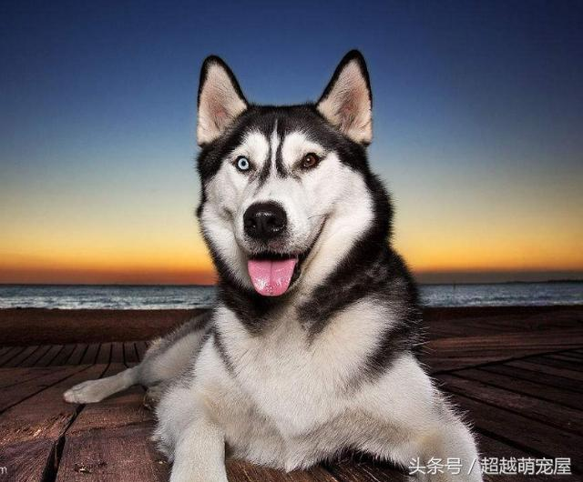
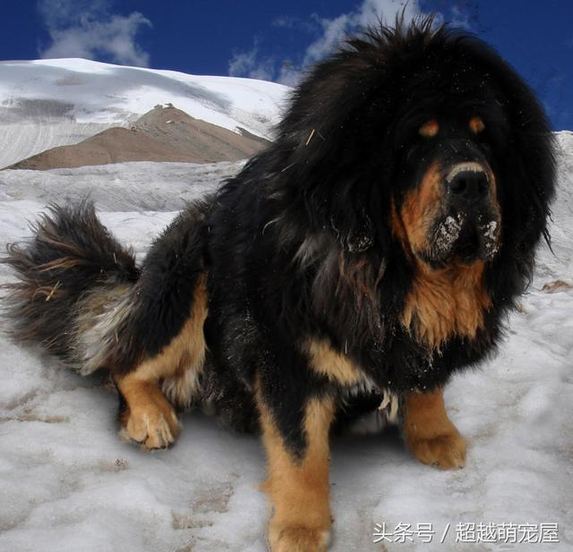
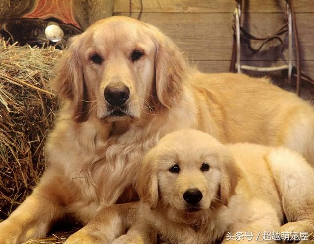
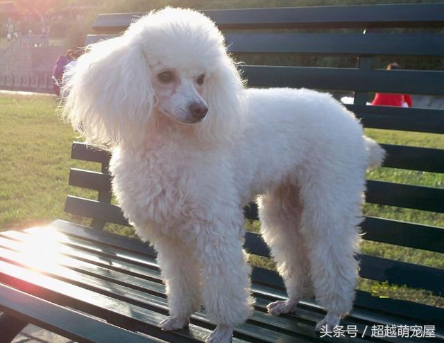
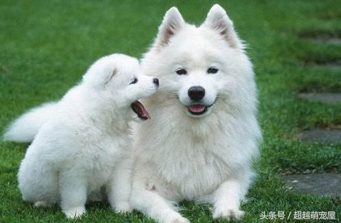

英文名： siberian husky
類型： 中型犬
分類：絨毛犬、拉雪橇犬、工作犬
特點： 哈士奇犬的典型性格為友好，溫柔，警覺並喜歡交往。它不會呈現出護衛犬強烈的領地占有欲，不會對陌生人產生過多的懷疑，也不會攻擊其他犬類。成年犬應該具備一定程度的謹慎和威嚴。此犬種聰明，溫順，熱情，是合適的伴侶和忠誠的工作者
英文名：Tibetan mastiff
品種：目前藏獒的品種有三種分別是：虎頭、大獅頭、小獅頭； 而顏色也有以下的分類：雪獒、黑獒、黃獒、紅獒、鐵包金、鐵包銀、狼青和灰獒 ；眼睛和嘴巴和臉的區分則有：吊眼、三角眼、吊嘴、大吊嘴、平嘴、老頭臉、普通等等
產地：西藏地區、河曲的獅頭藏獒、山南的虎頭、青海的玉樹的虎頭藏獒（至於傳說中的党項藏獒好不好有沒有就不清楚了
原產於中國青藏高原，是一種高大、兇猛、垂耳、短毛的家犬。身長約130厘米左右，被毛長而厚重，耐寒冷，能在冰雪中安然入睡。性格剛毅，力大兇猛，野性尚存，使人望而生畏。護領地，護食物，善攻擊，對陌生人有強烈敵意，但對主人極為親熱，是看家護院、牧馬放羊的得力助手。
英文名： golden retriever
類型： 中型犬
分類：槍獵犬、絨毛犬、工作犬
特點：金毛尋回獵犬體格健壯，工作熱心，可以用來捕捉水鳥，任何氣候下都能在水中游泳。深受獵手的喜愛，主要被作為家犬飼養，為大型犬。
英文名： poodle
類型： 中型犬
分類：伴侶犬、槍獵犬、比賽犬
特點：聰明，活潑，性情優良，極易近人，是一種忠實的犬種。非常敏捷，聰明而優雅的狗，正方形結構、比例勻稱，步伐有力而自信。需要按傳統方式修剪和精心美容，使他具有與眾不同的神態和特有的高貴姿態。標準貴賓犬還保留了其作為獵犬時的本領，游泳很好。聰明好學，在須服從的場合和馬戲團中很普及。這種犬快樂、溫順，是家庭的好寵物，需適當的活動。倘若你有足夠的時間去伺候，他也是一種很好的觀賞犬。雖然他也能修剪成獅子狀，但許多人喜歡把他剪成羊羔狀（頭部毛髮一樣長）。
英文名： samoyed
類型： 中型犬
分類：絨毛犬、工作犬、拉雪橇犬
特點：聰明、文雅、忠誠、適應性強、警惕、活躍、熱中於服務，友善但保守。薩摩耶犬是跑走型動物，它喜歡和需要運動，以保持身體健康和薩摩耶犬的天性，決不可長期關在屋裡或圈在活動範圍有限的欄里。